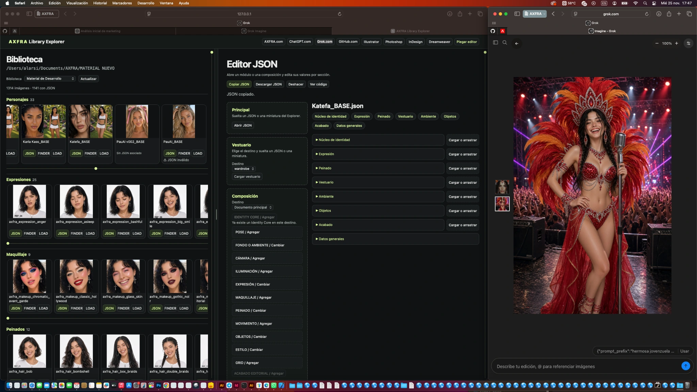

01 / Biblioteca
Seleccionar
Explorar recursos visuales y sus módulos JSON asociados, sin perder el contexto de cada componente.
La tecnología detrás de la imagen.
Un entorno de producción visual desarrollado por ALARSI para convertir una biblioteca de componentes reutilizables en composiciones complejas, editables y transferibles a distintas plataformas de inteligencia artificial. No se trata de generar una imagen: se trata de organizar cómo se produce.

Explorar recursos visuales y sus módulos JSON asociados, sin perder el contexto de cada componente.
Combinar componentes mediante arrastrar y soltar, editar parámetros por sección y reutilizar composiciones.
Transferir la composición a la plataforma de IA elegida, evaluar el resultado y volver a iterar.
El control de la composición permanece en AXFRA. La generación se realiza en plataformas externas, sin depender de una única interfaz ni de un único proveedor.
La transferencia se realiza mediante instrucciones JSON. Cada modelo interpreta los parámetros según sus propias capacidades; los resultados no son necesariamente idénticos.
Bibliotecas de trabajo y copias locales que pueden evolucionar sin alterar la publicación web.
Identidad, vestuario, expresión, cámara, iluminación, ambiente y otros bloques editables.
Arrastrar, cargar, copiar y editar JSON según el modo de trabajo en escritorio o portátil.
Cambiar una parte de la composición sin reconstruir desde cero todas las instrucciones.
AXFRA Magazine y AXFRA Motion fueron desarrollados utilizando Library Explorer. Son aplicaciones concretas de un flujo de producción que reduce el trabajo repetitivo y permite concentrar el esfuerzo en la dirección creativa.


Library Explorer nace de necesidades reales de producción. Es una herramienta de trabajo propia, utilizada en proyectos de AXFRA y transferida selectivamente a clientes estratégicos mediante acuerdos directos.
No es un servicio de generación de imágenes, ni una aplicación de distribución pública general. Su desarrollo forma parte de la investigación aplicada de ALARSI en creatividad y tecnología.